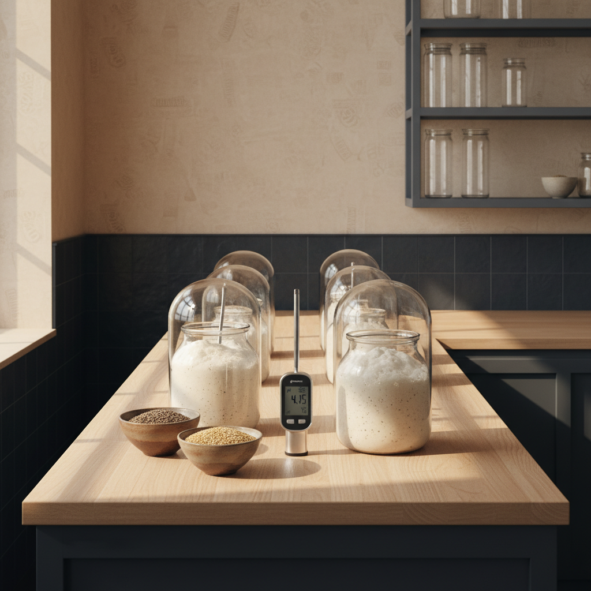
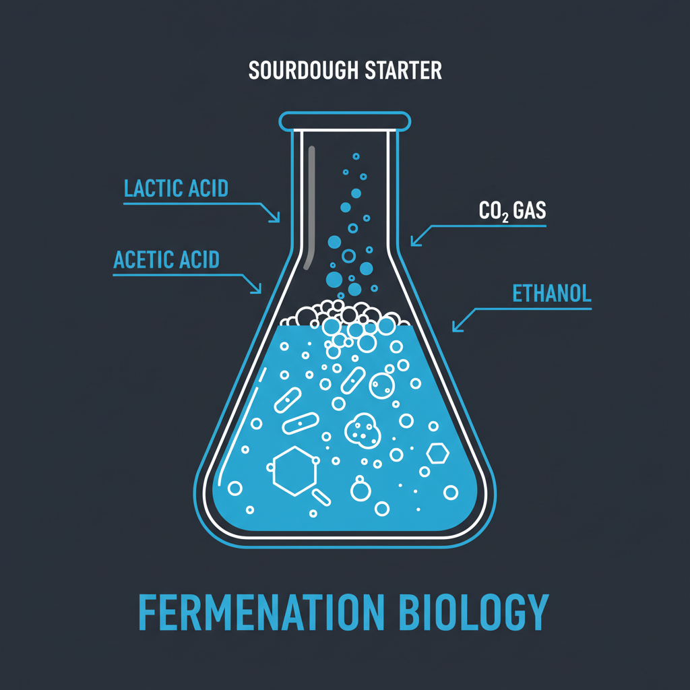

WildYeast was founded to bridge the gap between biological complexity and artisanal success.
Sourdough is often treated as a mystic art, but at its core, it is a high-precision biological system. For years, home bakers have been trapped in a "Failure Loop" — fighting dormant dehydrated packets and inconsistent supermarket flour. We founded WildYeast to replace that frustration with scientific certainty.
Our mission is to provide the "Living Bridge": the infrastructure required to transition home baking from a high-risk hobby into a high-retention lifestyle ritual. We don't just ship ingredients; we ship a proprietary cold-chain biological utility.
Every WildYeast culture is fed with a 100% hydration ratio using Janie's Mill Stone-Milled Heritage Flour. We monitor pH and volume growth for 72 hours until the SCOBY reaches peak microbial density.
At the point of peak fermentation (3.8 pH), the culture is moved to a 38°F environment. This enters the yeast into a semi-dormant state, preserving the biological markers for nationwide transit without nutrient exhaustion.
Utilizing PCM 23 (Phase Change Material), we lock our starters into a stable 71°F climate. This ensures that the organism arriving at your door is the same active culture that left our lab — 99% viability guaranteed.


The "Vitality Feed" isn't just flour; it's the biological input that determines the cellular structure of your bread. We utilize heritage grains specifically for their microbial diversity and protein density.
| GRAIN | PROTEIN % | BIOLOGICAL BENEFIT |
|---|---|---|
| RED FIFE | 13.2% | High gluten elasticity for structural rise. |
| EINKORN | 14.1% | Ancient microbial profile, gut-health focus. |
| ORGANIC SPELT | 12.8% | High water absorption (hydration stability). |
* ALL INPUTS ARE VERIFIED NON-GMO AND STONE-MILLED TO PRESERVE THE GERM AND ENDOSPERM INTEGRITY.
Secure your Founder's Batch infrastructure today. Shipments departing Monday.
PRE-ORDER NOW